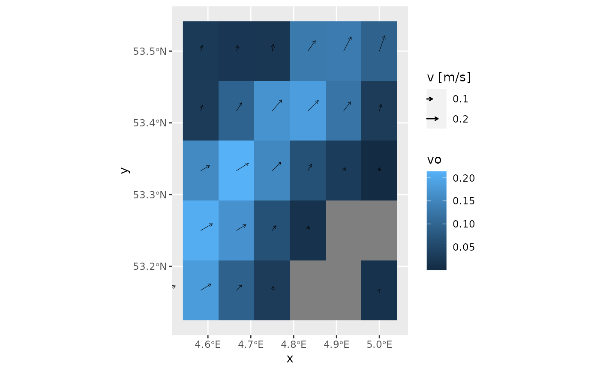

Functions exactly the same as geom_fields(), with that difference
that this function does not train the x and y scales. This
makes the data central, and uses this layer to support it. Consequently,
annotation_fields() does not accept a stat argument.
Arguments
- mapping
Set of aesthetic mappings created by
aes(). If specified andinherit.aes = TRUE(the default), it is combined with the default mapping at the top level of the plot. You must supplymappingif there is no plot mapping.- data
Can be one of four things:
NULL: in that case data from the parent ggplot call is inherited.data.frame: you need to assign thexandyaesthetics.sf object: it should contain a
geometrycolumn with onlyPOINTgeometries.stars object: it will be converted automatically to an
sfobject.
- position
A position adjustment to use on the data for this layer. This can be used in various ways, including to prevent overplotting and improving the display. The
positionargument accepts the following:The result of calling a position function, such as
position_jitter(). This method allows for passing extra arguments to the position.A string naming the position adjustment. To give the position as a string, strip the function name of the
position_prefix. For example, to useposition_jitter(), give the position as"jitter".For more information and other ways to specify the position, see the layer position documentation.
- na.rm
If
FALSE, the default, missing values are removed with a warning. IfTRUE, missing values are silently removed.- show.legend
logical. Should this layer be included in the legends?
NA, the default, includes if any aesthetics are mapped.FALSEnever includes, andTRUEalways includes. It can also be a named logical vector to finely select the aesthetics to display.- max_radius
Maximum radius to which the
radiusaesthetic is scaled in the plot. You can use absolute ("e.g., "cm", "in", "pt") and relative ("npc") units to set its value. Default is0.5 cm.- .angle_correction
Function to correct the angle in the aesthetics for the projection and/or aspect ratio used in the plot. When set to
NULLthe angle is not corrected and is treated as the angle in the final plot. A custom function can be provided which should accept at least three arguments (data,panel_paramsandcoord). Seeangle_correction()andvignette("angle_correction")for more details.- arrow
specification for arrow heads, as created by
grid::arrow().- inherit.aes
If
FALSE, overrides the default aesthetics, rather than combining with them. This is most useful for helper functions that define both data and aesthetics and shouldn't inherit behaviour from the default plot specification, e.g.borders().- ...
Other arguments passed on to
layer()'sparamsargument. These arguments broadly fall into one of 4 categories below. Notably, further arguments to thepositionargument, or aesthetics that are required can not be passed through.... Unknown arguments that are not part of the 4 categories below are ignored.Static aesthetics that are not mapped to a scale, but are at a fixed value and apply to the layer as a whole. For example,
colour = "red"orlinewidth = 3. The geom's documentation has an Aesthetics section that lists the available options. The 'required' aesthetics cannot be passed on to theparams. Please note that while passing unmapped aesthetics as vectors is technically possible, the order and required length is not guaranteed to be parallel to the input data.When constructing a layer using a
stat_*()function, the...argument can be used to pass on parameters to thegeompart of the layer. An example of this isstat_density(geom = "area", outline.type = "both"). The geom's documentation lists which parameters it can accept.Inversely, when constructing a layer using a
geom_*()function, the...argument can be used to pass on parameters to thestatpart of the layer. An example of this isgeom_area(stat = "density", adjust = 0.5). The stat's documentation lists which parameters it can accept.The
key_glyphargument oflayer()may also be passed on through.... This can be one of the functions described as key glyphs, to change the display of the layer in the legend.
Examples
if (requireNamespace("stars") && requireNamespace("ggplot2")) {
library(stars)
library(ggplot2)
data("seawatervelocity")
sw_sub <- seawatervelocity[,8:13,1:5]
## Note that the `seawatervelocity` spans a much larger area,
## but the plot only focuses on `sw_sub`
ggplot() +
geom_stars(data = sw_sub) +
annotation_fields(data = seawatervelocity,
aes(angle = as.numeric(atan2(vo, uo)),
radius = as.numeric(pythagoras(uo, vo)))) +
labs(radius = "v [m/s]")
}
#> Loading required package: abind
#> Loading required package: sf
#> Linking to GEOS 3.10.2, GDAL 3.4.1, PROJ 8.2.1; sf_use_s2() is TRUE
#> Angle correction between 0.00 and 0.00 radials
